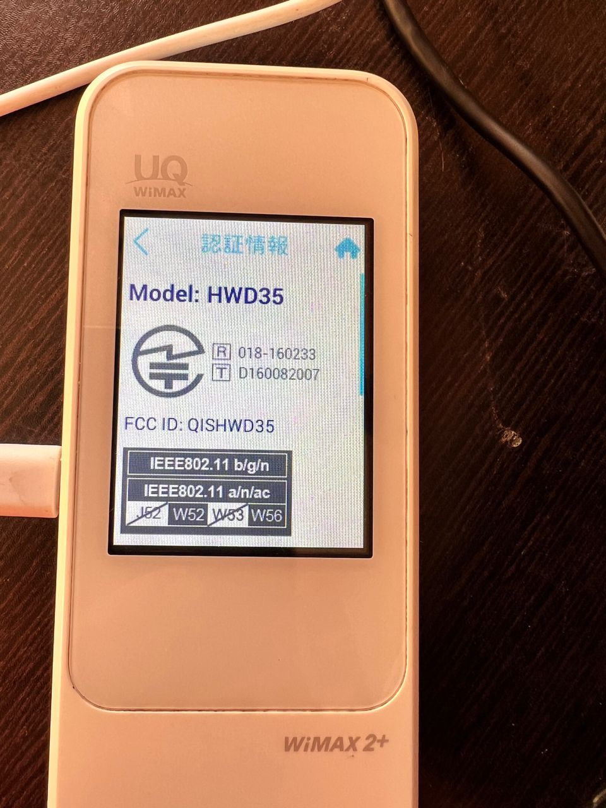
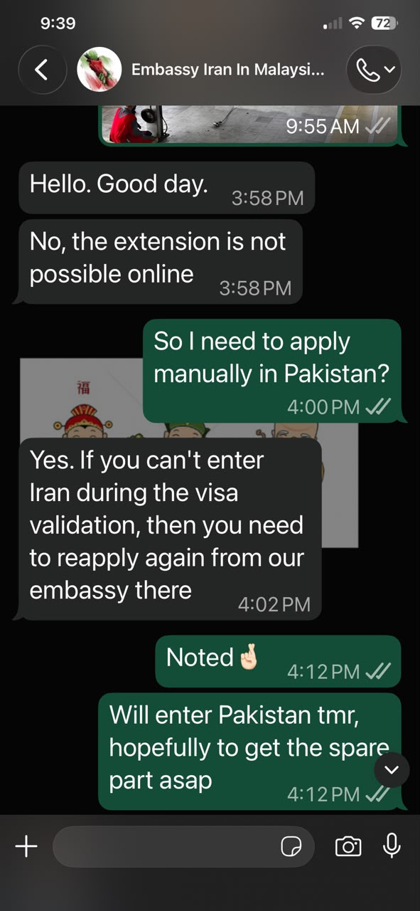
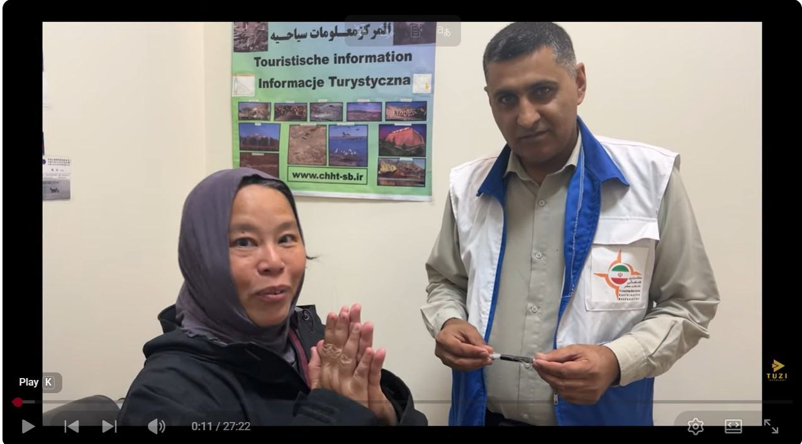
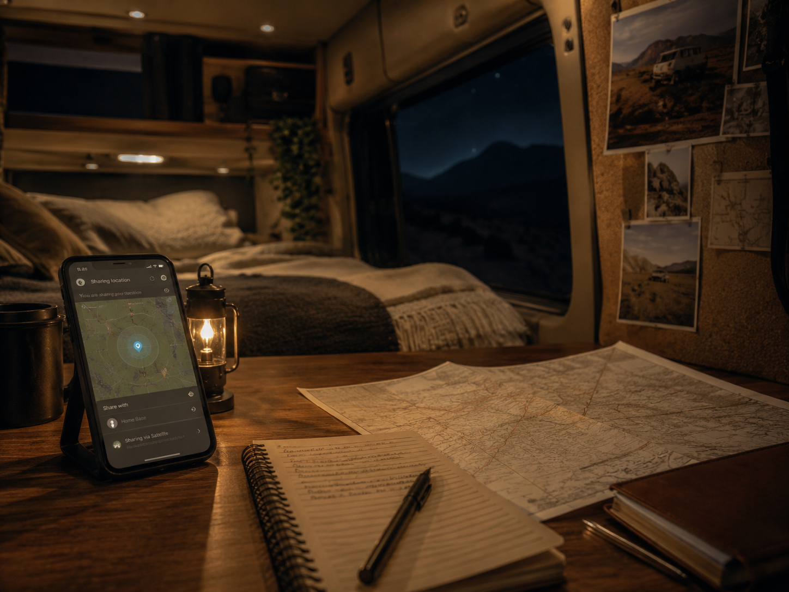
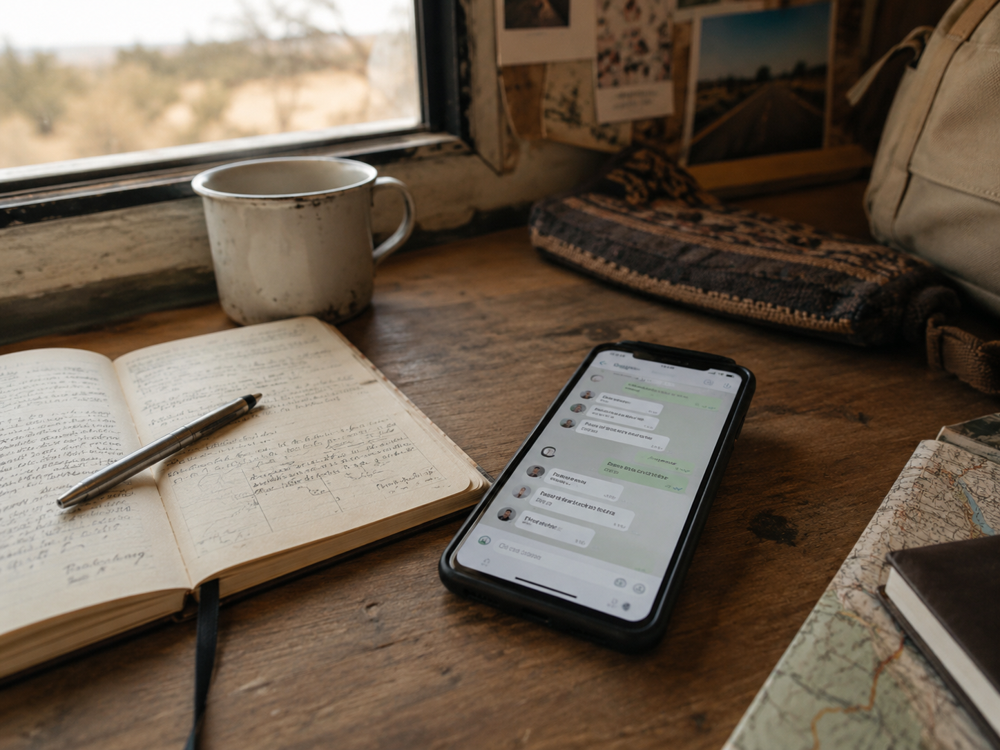
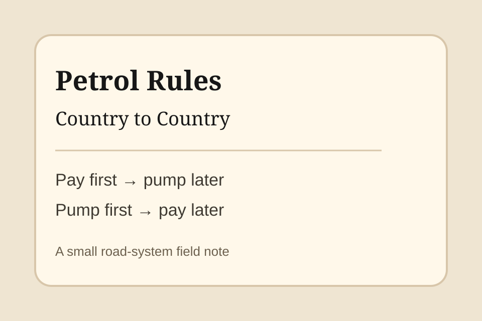

Field Notes · Method Behind the Journey
The invisible discipline behind 306 days.
These notes are not regular travel stories. They explain the systems, habits, safety traces, communication rituals, and operating methods that made the solo overland journey possible.
中文说明
这里记录的，不是发生了什么，而是旅程如何被维持。
Stories 记录路上的人、事件与风景；Field Notes 记录背后的方法。 例如每晚发定位、每日 mileage report、如何在不同国家保持联系、如何让 solo journey 不变成 untraceable journey。

Iran · Connectivity
Iran Connectivity and Wimax
When foreigner SIM connectivity became limited, Wimax became part of the solo overland safety system.

Iran · Authority Contact
Embassy Contact Before Iran
Before entering Iran, Tuzi kept direct contact with the Embassy of Iran in Malaysia for visa and entry guidance.

Iran · Border Support
Iran Overlander Protection Network
At the Pakistan–Iran crossing, assigned SIM cards, WhatsApp contact, and a tourist group helped overlanders stay visible and safe.

Field Note 01 · Safety Protocol
The Nightly Location Ritual
Solo overland did not mean disappearing. Every night, after finding a sleeping place, Tuzi shared her exact location with her family WhatsApp group.
Field Note 02 · Operating Discipline
Daily Mileage Reports
The sponsor mileage records and tyre-support reporting system show how the journey kept a daily operating trace.

Field Note 03 · Safety Communication
WhatsApp Safety Web
Beyond family location and sponsor mileage reports, Tuzi also kept selected friends and groups informed through WhatsApp.
Field Note 04 · Pre-departure Planning
Pre-departure Planning Excel
One year before departure, Tuzi planned borders, visas, insurance, route, fuel, tolls, campsites, weather, and more in Excel.
Field Note 05 · Pre-departure Execution
Pre-departure Execution Checklist
One year before departure, Tuzi broke the preparation into dated tasks and marked them completed one by one.

Road System · Field Note
Petrol Rules Country to Country
A road-system field note: some countries require payment before petrol, while others allow petrol first and payment later.